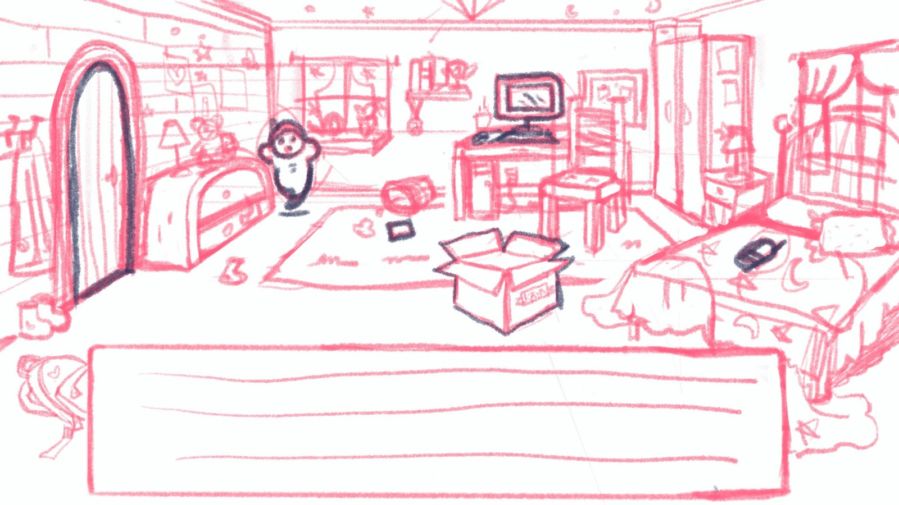

Animation 2D
Nous avons orienté notre projet vers une simulation qui reflète notre intérêt pour le design graphique et l'illustration. Cette approche a un objectif pratique : nos compétences en illustration nous ont permis de développer une solution efficace en 2D, simple à animer et à intégrer dans plusieurs types de formats.